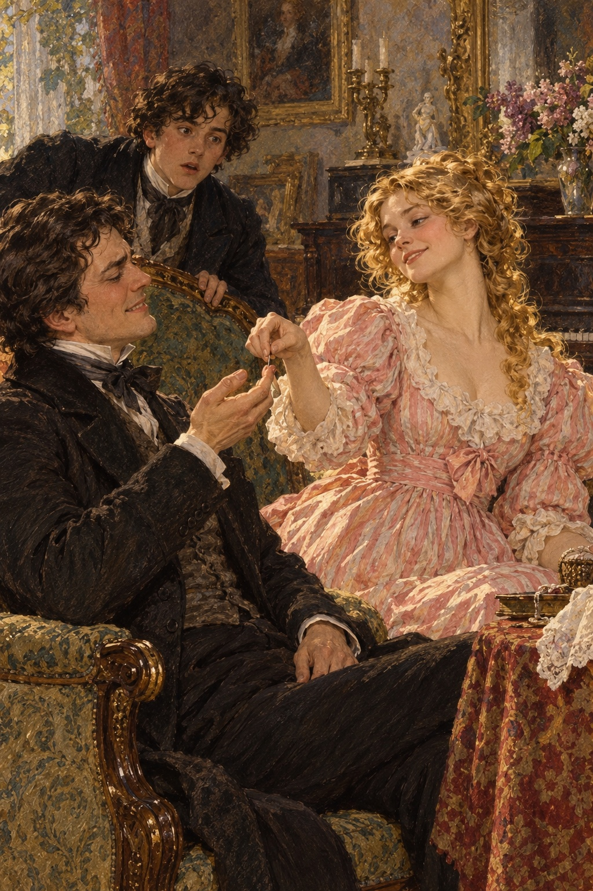
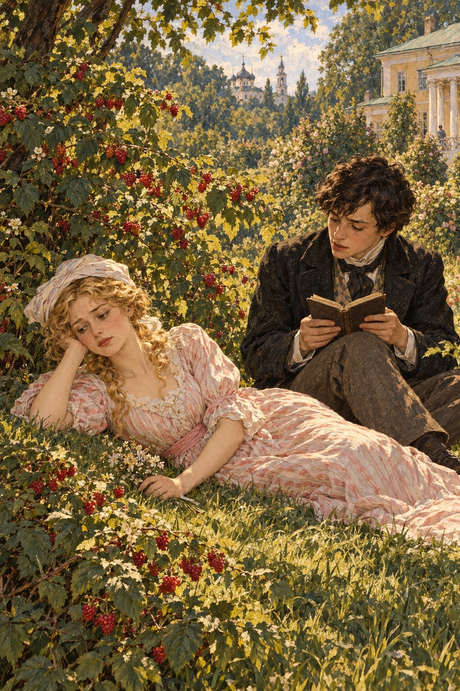

Ivan Turgenev · First Love
제9장
내 ‘열병’은
그날부터 시작됐다.
그때 나는
처음 직장을 얻은 사람이
느낄 법한 기분을
느꼈던 것 같다.
나는 더 이상
그저 어린 소년이 아니었다.
사랑에 빠진 사람이었다.
열병이 시작된 날은
고통이 시작된 날이기도 했다.
지나이다가 곁에 없으면
견딜 수 없었다.
무엇도 손에 잡히지 않았다.
온종일 그녀만 생각했다.
그러나 그녀 앞에 서도
마음이 편해지지는 않았다.
질투가 났고,
내 보잘것없음이 느껴졌다.
어리석게 토라지고,
또 어리석게 굽실거렸다.
그래도 막을 수 없는 힘이
나를 그녀에게 끌었다.
그 방 문턱을 넘을 때마다
행복한 떨림이
저절로 일었다.
지나이다는 내가
그녀를 사랑한다는 걸
곧 알아차렸다.
나도 숨길 생각이 없었다.
그녀는 내 사랑을 재미있어했다.
나를 놀리고,
어르고,
괴롭혔다.
누군가에게
가장 큰 기쁨과
가장 깊은 슬픔을 주는
유일한 사람이 된다는 것은
달콤한 일일 것이다.
지나이다 손에 든 나는
말랑한 밀랍 같았다.
하지만 그녀를 사랑한 사람이
나만은 아니었다.
그 집을 드나드는 남자들은
모두 그녀에게 빠져 있었다.
지나이다는
그들을 발치에 붙들어 두었다.
희망을 줬다가 두렵게 하고,
마음대로 휘두르는 일을
즐겼다.
그녀는 이를
‘사람들을 서로 부딪치게 한다’고
불렀다.
남자들은 거스르기는커녕
기꺼이 따랐다.
생기 넘치고 아름다운
그녀의 몸과 마음에는
교활함과 태평스러움,
꾸밈과 순진함,
고요함과 장난기가
묘하게 섞여 있었다.
행동과 말,
손짓 하나에도
가볍고 섬세한 매력이 떠돌았다.
모든 것에서
그녀만의 활기찬 힘이 느껴졌다.
얼굴도 쉼 없이 바뀌었다.
빈정거림과 생각에 잠긴 표정,
뜨거운 열정이
거의 동시에 나타났다.
바람 부는 맑은 날
구름 그림자가 달리듯,
갖가지 감정이
그녀의 눈과 입술을
빠르게 스쳐 갔다.
그녀에게는
구혼자 하나하나가 필요했다.
벨로브조로프를
그녀는 때로 ‘내 짐승’,
때로 그저 ‘내 것’이라 불렀다.
그는 그녀를 위해서라면
불 속에도 뛰어들 사람이었다.
자기 지성이나 다른 장점에는
자신이 없었기에
늘 결혼하자고 졸랐다.
다른 남자들은
말뿐이라는 뜻을 비쳤다.
마이다노프는
그녀 안의 시적인 마음에
화답했다.
그는 다른 작가들처럼
꽤 냉담한 사람이었다.
그런데도 그녀를 숭배한다고
열심히 주장했다.
어쩌면 자기 자신까지
설득하려 했는지도 모른다.
끝도 없는 시에서
그녀를 찬미했고,
부자연스러우면서도
진심 어린 열광으로
시를 읽어 주었다.
그녀는 그의 마음에
공감하면서도
조금 놀렸다.
그의 말을
썩 믿지 않았다.
그가 감정을 쏟아낸 뒤에는
푸시킨의 시를
읽어 달라고 했다.
그녀 말로는
방 안 공기를 맑게 하려는 것이었다.
말로는 냉소적인 의사 루신은
누구보다 지나이다를 잘 알았고,
누구보다 깊이 사랑했다.
그는 그녀 앞에서도,
없는 자리에서도
그녀를 나무랐다.
지나이다는 그를 존중했지만
봐주지는 않았다.
때때로 유난히 짓궂은 기쁨으로
루신도 자기 손안에 있음을
깨닫게 했다.
“저는 남자들을 유혹하고,
마음도 없고,
늘 연기나 하는 여자라면서요?”
한 번은 내 앞에서
그녀가 루신에게 말했다.
“좋아요.
그럼 손을 주세요.
바늘로 찌를게요.
이 젊은이 앞이라
창피할 거고,
아프기도 할 거예요.
그래도 진실만 말하시는 선생님은
웃어 보세요.”

루신은 얼굴이 붉어졌다.
고개를 돌리고
입술을 깨물었다.
그러나 끝내
손을 내밀었다.
그녀가 바늘로 찌르자
그는 실제로 웃기 시작했다.
지나이다도 웃었다.
바늘을 꽤 깊이 찔러 넣으며
루신의 눈을 들여다보았다.
루신은 눈길을 피하려 했지만
소용없었다.
내가 가장 이해하기 어려웠던 것은
지나이다와 말렙스키 백작의
관계였다.
그는 잘생기고
처세에 능하며 영리했다.
하지만 열여섯 살인 내 눈에도
어딘가 수상하고
거짓된 구석이 보였다.
지나이다가 그걸 모르다니
놀라웠다.
어쩌면 그녀도 알면서
개의치 않았을 것이다.
제멋대로 받은 교육,
낯선 부류의 사람들과 익힌 습관,
언제나 곁에 있는 어머니,
가난하고 어수선한 집.
그녀가 누린 자유와
주위 사람들보다 뛰어나다는
자각까지,
그 모든 것이
그녀 안에
남을 반쯤 업신여기면서도
아무것에도 까다롭지 않은
태도를 키웠다.
무슨 일이 일어나든 그랬다.
보니파티가 설탕이 떨어졌다고
알리러 오거나,
추한 소문이 드러나거나,
손님들이 싸워도
그녀는 곱슬머리만 흔들었다.
“별것 아니에요.”
그러고는
걱정하지 않았다.
하지만 말렙스키가
여우처럼 교활하게
몸을 흔들며 다가와,
그녀의 의자 등받이에
멋스럽게 몸을 기대고,
우쭐하면서도 비위를 맞추는
웃음을 띠고 귓속말을 하면
내 피는 불타올랐다.
지나이다는
팔짱을 낀 채
그를 주의 깊게 보았다.
그녀도 웃으며
고개를 끄덕였다.
“왜 말렙스키 씨를
만나 주시는 거예요?”
내가 한 번 물었다.
“콧수염이 아주 예쁘잖아요.”
그녀가 답했다.
“그건 당신과 상관없는 일이에요.”
또 한 번은
그녀가 내게 말했다.
“제가 그를 사랑한다고 생각하세요?
아니에요.
제가 내려다봐야 하는 남자는
사랑할 수 없어요.
저를 꺾을 수 있는 남자가 필요해요.
그래도 그런 사람을
만나지 않게 해 달라고
빌어야겠지요.
누구에게도 붙잡히지 않을 거예요.
절대로요.”
“그럼 누구도
사랑하지 않으실 건가요?”
“당신은요?
제가 당신을 사랑하지 않나요?”
그녀는 장갑 끝으로
내 코를 톡 쳤다.
지나이다는 정말
나를 놀리며 즐거워했다.
나는 삼 주 동안
매일 그녀를 만났다.
그동안 그녀는
내게 별별 일을 다 했다.
그녀가 우리 집에 오는 일은
드물었다.
나는 그게 아쉽지 않았다.
우리 집에서는
그녀가 얌전한 아가씨,
공녀로 변했다.
그러면 나는
가까이하기가 어려웠다.
어머니 앞에서
마음을 들킬까 봐도 두려웠다.
어머니는 지나이다를
몹시 탐탁지 않게 여겼고
우리 둘을 못마땅한 눈으로
지켜보았다.
아버지는 덜 무서웠다.
아버지는
나를 거의 보지 않는 듯했다.
지나이다와도
말은 많이 하지 않았다.
그런데 그 짧은 말에는
묘한 총명함과 무게가 있었다.
나는 공부도,
책 읽기도 그만두었다.
근처를 산책하거나
말을 타러 나가는 일도
하지 않았다.
발에 실이 묶인 딱정벌레처럼
사랑하는 별채 주위만
맴돌았다.
영원히 그곳에
머물 수 있다면 좋을 것 같았다.
하지만 그럴 수 없었다.
어머니가 잔소리를 했고,
지나이다가 직접
나를 쫓아낼 때도 있었다.
그럴 때면 방에 틀어박히거나
정원 맨 끝으로 갔다.
그곳에는
돌로 지은 높은 온실의
무너진 흔적이 남아 있었다.
나는 살아남은 벽 위로 올라가
길 쪽으로 두 다리를 늘어뜨리고
몇 시간씩 앉아 있었다.
바라보면서도
아무것도 보지 못했다.
옆의 먼지 쌓인 쐐기풀 사이로
흰 나비들이 게으르게 날았다.
부러진 붉은 벽돌 위에는
참새 한 마리가 내려앉았다.
몸을 끊임없이 돌리고
꼬리를 펼치며
신경질적으로 짹짹거렸다.
까마귀들은 아직도
나를 믿지 않았다.
멀리 높이 솟은
잎이 듬성한 자작나무 꼭대기에서
가끔 울었다.
햇빛과 바람이
성긴 가지에서 조용히 놀았다.
돈스코이 수도원의 종소리가
가끔 들려왔다.
차분하고 쓸쓸한 소리였다.
나는 그곳에 앉아
보고 들었다.
이름 붙일 수 없는 감정이
마음을 가득 채웠다.
슬픔과 기쁨,
앞날에 대한 예감,
삶을 향한 욕망과 두려움이
모두 들어 있었다.
그때는 그 어느 것도
이해하지 못했다.
내 안에서 소용돌이치는 것에
이름을 붙일 수도 없었다.
굳이 하나의 이름을
붙인다면,
그것은 전부
지나이다였다.
지나이다는 여전히
고양이가 쥐를 가지고 놀듯
나를 갖고 놀았다.
한때는 마음을 끄는 몸짓을 했다.
그러면 나는 들뜨고
온몸이 녹아내렸다.
그러다가 갑자기
나를 밀어냈다.
그러면 가까이 가기는커녕
쳐다보지도 못했다.
며칠 내리
나를 차갑게 대한 때가 있었다.
나는 완전히 주눅이 들었다.
겁을 내며 별채에 들러도
늙은 공작부인 곁에만
머무르려 했다.
하필 그때 공작부인은
평소보다 더 많이
욕하고 소리쳤다.
빚 문서 문제가 잘 풀리지 않아
관할 경찰관과 이미 두 차례나
말다툼을 했기 때문이다.
어느 날
그 낯익은 울타리 옆으로
정원을 걷다가
나는 지나이다를 보았다.
그녀는 두 손으로 땅을 짚고
풀밭에 앉아 있었다.
꼼짝도 하지 않았다.
나는 조용히 돌아서려 했다.
그때 그녀가 머리를 들고
손짓으로 나를 불렀다.
나는 그 자리에 굳었다.
무슨 뜻인지 바로 알아듣지 못했다.
그녀가 다시 손짓했다.
나는 곧장 울타리를 넘어
기뻐하며 달려갔다.
하지만 그녀의 눈길이
나를 멈춰 세웠다.
그녀는 두 걸음 떨어진
오솔길을 가리켰다.
나는 당황해서
어찌할지 몰랐다.
그 길 가장자리에
무릎을 꿇었다.
그녀는 몹시 창백했다.
얼굴 하나하나에
쓰라린 슬픔과
깊은 피로가 배어 있었다.
내 가슴이 조여 왔다.
나도 모르게 중얼거렸다.
“무슨 일 있으세요?”
지나이다는 손을 뻗어
풀잎 하나를 뜯었다.
그것을 깨물더니
멀리 던져 버렸다.
“저를 많이 사랑하세요?”
마침내 그녀가 물었다.
“그렇지요?”
나는 대답하지 않았다.
대답할 필요도 없었다.
“그래요.”
그녀는 나를 바라보며
다시 말했다.
“그 눈도 똑같아요.”
생각에 잠긴 채
얼굴을 두 손으로 가렸다.
“모든 게 싫어졌어요.”
그녀가 속삭였다.
“세상 끝으로라도 가고 싶어요.
더는 못 견디겠어요.
감당할 수가 없어요.
앞으로 무엇이 기다릴까요?
아, 힘들어요.
하느님, 너무 힘들어요.”
“왜 그러세요?”
내가 조심스레 물었다.
지나이다는 답하지 않고
어깨만 으쓱했다.
나는 무릎 꿇은 채
깊은 슬픔으로 그녀를 바라보았다.
한마디 한마디가
내 가슴에 박혔다.
그 순간 그녀가
슬퍼하지 않을 수만 있다면
기꺼이 목숨도 내놓았을 것이다.
왜 괴로운지 알지 못하면서도
이런 모습이 눈앞에 그려졌다.
감당할 수 없는 슬픔에
정원으로 달려 나온 그녀가
낫에 베인 풀처럼
땅에 쓰러지는 모습이었다.
주위는 밝고 푸르렀다.
바람이 나뭇잎을 흔들었다.
긴 산딸기 가지 하나가
이따금 그녀의 머리 위에서
흔들렸다.
어딘가에서 비둘기가 울고,
벌은 성긴 풀 위를
낮게 날며 윙윙거렸다.
하늘은 다정하게 푸르렀다.
그런데 나는
몹시 슬펐다.

“시를 좀 읽어 주세요.”
지나이다가 팔꿈치로
몸을 받치고
나직하게 말했다.
“그쪽이 시 읽는 걸 좋아해요.
노래하듯 읽지만 괜찮아요.
젊어서 그렇지요.
《그루지야 언덕에》를 읽어 주세요.
먼저 앉으시고요.”
나는 앉아서
그 시를 읽었다.
“사랑하지 않을 수 없다는 말.”
지나이다가 시구를 되뇌었다.
“시가 좋은 건
현실에는 없는 것을
말해 주기 때문이에요.
현실보다 더 아름다울 뿐 아니라
더 참되게 느껴지는 것을요.
사랑하지 않을 수 없다니.
사랑하지 않으려 해도
그러지 못하는 거예요.”
그녀는 다시 입을 다물었다.
그러다 갑자기
정신을 차린 듯 일어섰다.
“가요.
어머니 곁에 마이다노프가 있어요.
제게 시를 가져왔는데
혼자 두고 나왔네요.
그 사람도 지금 속상할 거예요.
어쩌겠어요.
언젠가 알게 될 거예요.
그때 저를 미워하지만 마세요.”
지나이다는
내 손을 급히 쥐고
앞서 달려갔다.
우리는 별채로 돌아갔다.
마이다노프가
갓 인쇄한 자기 시
《살인자》를 읽기 시작했다.
나는 듣지 않았다.
그는 네 박자로 흐르는 시구를
코맹맹이 소리로
노래하듯 외쳤다.
운율은 방울처럼
요란하고 속 비게 울렸다.
나는 지나이다만 보며
마지막 말의 뜻을
알아내려 애썼다.
“혹시 숨은 연적이
느닷없이 그대를 사로잡았나?”
마이다노프가
갑자기 코맹맹이 소리로
외쳤다.
그 순간
내 눈과 지나이다의 눈이
마주쳤다.
그녀는 눈을 내리깔고
얼굴을 살짝 붉혔다.
그 얼굴빛을 보자
무서워서 온몸이 차가워졌다.
전에도 질투는 했다.
하지만 그녀가
누군가를 사랑한다는 생각은
그때 처음 번개처럼 떠올랐다.
‘하느님,
지나이다가 사랑에 빠졌구나!’